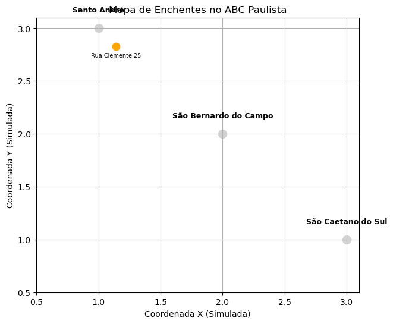

TECNOLOGIA
QUE PROTEGE.
SOLUÇÕES
QUE SALVAM.
QUE PROTEGE.
SOLUÇÕES
QUE SALVAM.
CRIE ALERTAS DE ENCHENTE EM TEMPO REAL

Você já imaginou ajudar a salvar vidas vítimas de enchentes através
de alguns cliques ?
Crie um alerta através do nosso site e compartilhe com toda a
comunidade pontos que devem ser evitados!
De forma simples e descomplicada, você pode ajudar a salvar vidas e
ainda contribuir com as autoridades para cessar as enchentes.
de alguns cliques ?
Agora você pode!
Viu uma área alagada? Crie um alerta através do nosso site e compartilhe com toda a
comunidade pontos que devem ser evitados!
De forma simples e descomplicada, você pode ajudar a salvar vidas e
ainda contribuir com as autoridades para cessar as enchentes.
Fique ligado e faça parte desse projeto!


CONHEÇA NOSSA EMPRESA
A PLUVION surgiu para ajudar moradores do ABC Paulista,oferecendo soluções contra enchentes, alagamentos e riscos causados por chuvas.

O produto desta empresa vai muito além de um benefício, mas procura ajudar a humanidade a enfrentar os desafios da natureza através de soluções tecnológicas.

PRINCIPAIS NOTÍCIAS
ALAGAMENTO NA ESTAÇÃO DE TREM
Santo André
A cidade de Santo André foi
fortemente atingida por um temporal
que causou alagamentos severos,
especialmente na estação ferroviária
da CPTM, que ficou submersa,
interrompendo a circulação de trens
entre as estações Utinga e Mauá
fortemente atingida por um temporal
que causou alagamentos severos,
especialmente na estação ferroviária
da CPTM, que ficou submersa,
interrompendo a circulação de trens
entre as estações Utinga e Mauá
PISCINÃO JABOTICABAL (RM-19)
São Bernardo do Campo
Jaboticabal (RM-19) tem como objetivo
controlar inundações e reduzir
alagamentos em São Bernardo do
Campo, São Caetano do Sul e parte da
capital paulista.
controlar inundações e reduzir
alagamentos em São Bernardo do
Campo, São Caetano do Sul e parte da
capital paulista.
CHUVAS FORTES
São Caetano do Sul
Uma forte chuva atingiu a cidade,
com ventos de até 85 km/h e 60 mm
de precipitação, mais de 10 pontos
alagados e 5 árvores derrubadas..
com ventos de até 85 km/h e 60 mm
de precipitação, mais de 10 pontos
alagados e 5 árvores derrubadas..
Quiz Segurança na Chuva
Pergunta aqui...
Seu resultado:
MAPA DE ALAGAMENTOS NESTE MOMENTO
Acompanhe o mapa da sua região que possuí pontos alagados
